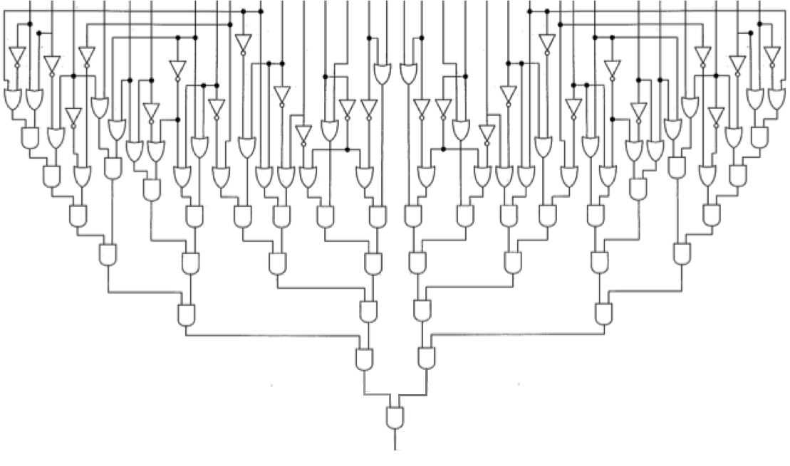

Title:
Circuit Satisfiability
Topics:
Digital circuitry, parallel computing, performance analysis
Prerequisites:
Boolean logic, parallel loops, metering, speedup, computational efficiency
Instructions:
For a given binary circuit,
the Circuit Satisfiability Problem is to
find the circuit's "solutions"--all inputs
that cause that circuit to output 1
(as opposed to 0)--as well as the total number of solutions.
For example, here is a 32-bit circuit diagram:

The 32 vertical lines at the top are the binary inputs to the circuit;
the single vertical line at the bottom-middle is the circuit's binary output.
The circuit between the inputs and output
contains AND-gates, OR-gates, and inverters,
we can model that circuit in software using
the boolean AND (&&), OR (||), and NOT (!) operators.
This problem can be solved using a brute-force approach,
in which a for loop iterates through all the possible inputs,
and if a given input i causes the circuit to produce 1,
the program outputs i and increments a counter.
After the for loop has finished, the program outputs the value of the counter.
Note:
To find all solutions,
this sequential program must check 232
possible inputs to the circuit.
It requires several minutes to finish on a typical Linux workstation
(and many more minutes if using Python).
The assignment is to:
-
Add internal timing calls (e.g., using MPI or OpenMP's calls)
to the beginning and end of the sequential solution to measure
precisely how long it takes to solve the problem.
Record that time in a spreadsheet,
indicating that it is the time to solve the problem
using 1 processing element (PE).
-
Use parallel techniques to convert the sequential program
into a parallel program that solves the problem.
(Hint: Convert the for loop into a parallel loop.)
-
In your spreadsheet, record the raw times your parallel solution
requires to solve the problem using a given number of PEs.
For each PE value, calculate the speedup and computational efficiency.
Then create three line-charts that (respectively) show the relationship
between the number of PEs and:
- the raw times,
- the speedup values, and
- the computational efficiency values.
Depending on which software option (see below) you are using,
your instructor may provide additional details regarding their
precise expectations regarding the number of PEs you are to use.
-
Write a 1-page report in which you explain what your charts
reveal about the relationships between the number of PEs
and the raw time, the speedup, and the computational efficiency
of your parallel program.
Deliverables:
Using the submission process at your institution, turn in:
-
Your 1-page report.
-
Your three charts (one per page, maximized to fill the page).
-
Your spreadsheet, showing the data used to generate your charts.
-
The source code of your parallel program.
Software/Hardware Options:
Language Options:
C, C++, Java, or Python
As starter code, the sequential programs
circuitSolver.c,
circuitSolver.cpp,
circuitSolver.java,
and circuitSolver.py
each solve the problem using a brute-force approach.
License: MIT
Origins:
This is a 32-bit version of the 16-bit problem presented in
Parallel programming in C with MPI and openMP,
by Michael J. Quinn,
McGraw-Hill, 2004.
PDC Assignments >
Circuit Satisfiability